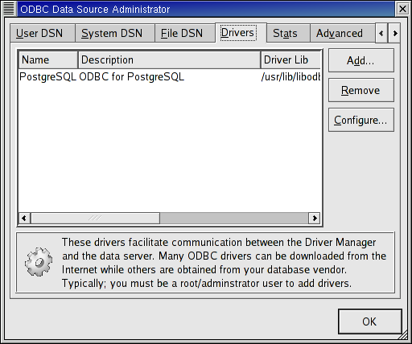
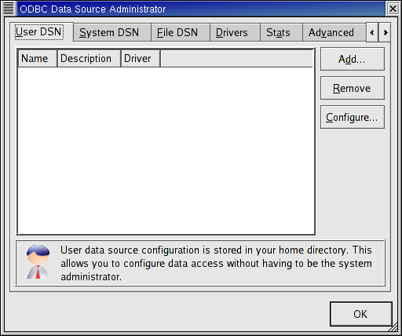
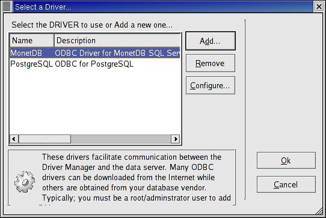
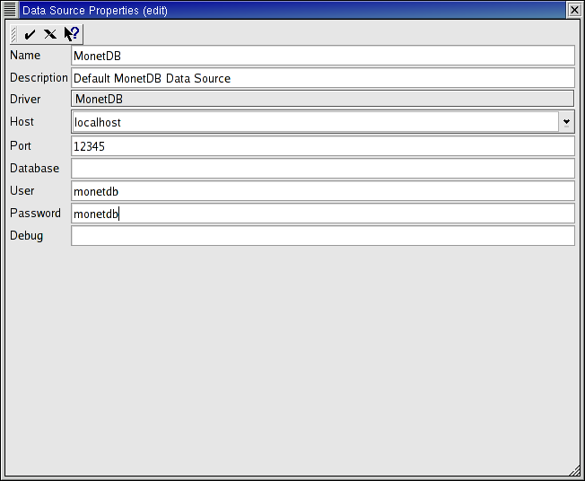

As Superuser, start the unixODBC configuration program ODBCConfig and select the Drivers tab.
On this tab, click on the button labeled Add... and fill in the fields as follows.

Don't change the other fields.
When done, click on the check mark in the top left corner of the window.
The first window should now contain an entry for MonetDB. Click on OK
Now as normal user start ODBCConfig again.
On the User DSN tab click on the Add... button. A new window pops up in which you have to select the ODBC driver. Click on the entry for MonetDB and click on OK.
A new window pops up. Fill in the fields as follows.
Don't change the other fields.
When done, click on the check mark in the top left corner of the window.
The first window should now contain an entry for MonetDB. Click on OK